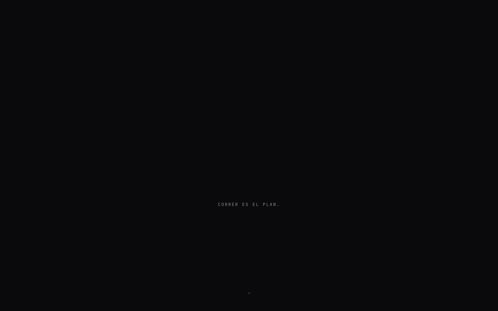

PULZ
La plataforma runner de Sudamérica
Tipo
Plataforma / Web App
Año
2026
Stack
HTML · CSS · JS · Supabase
Estado
En desarrollo
El problema
En Sudamérica no existía una plataforma unificada para descubrir carreras de running y trail. Los corredores dependían de grupos de Facebook, PDFs dispersos y boca a boca para encontrar eventos. Los organizadores no tenían forma eficiente de llegar a nuevos participantes.

La solución
PULZ agrega +110 carreras en 6 países. Los corredores buscan, filtran por distancia/ubicación/fecha, guardan favoritos y arman su calendario. Los organizadores publican eventos y llegan a miles de runners con un solo formulario.
Soporte multilenguaje (ES/EN/PT), tema claro/oscuro, autenticación con roles diferenciados, exportación a Google Calendar, y diseño PWA con soporte offline.
Paleta
Tipografía
Space Grotesk
Features
- Buscador con filtros por país, distancia, terreno y fecha
- Sistema de favoritos y calendario personal
- Roles: corredor / organizador / admin
- PWA con soporte offline
- Exportación a Google Calendar
- Multilenguaje: ES · EN · PT